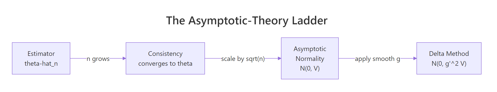

Asymptotic Theory in R: Consistency, Asymptotic Normality & Delta Method
Asymptotic theory studies how estimators behave when the sample size grows. Three results do almost all the work: consistency (the estimator settles on the truth), asymptotic normality (its sampling distribution becomes Gaussian on a √n scale), and the delta method (smooth transformations of asymptotically normal estimators are themselves asymptotically normal). This post shows what each of them means by simulating them in R.
What does it mean for an estimator to have good asymptotic behavior?
Large-sample guarantees let you trust a formula that would be hopeless to verify on a single small sample. Instead of asking how good is my estimator right now, asymptotic theory asks what happens as n grows. We start with the most visible guarantee, consistency, and watch it in action by drawing samples of increasing size from a known Normal distribution.
The sample mean wobbles around the true value of 5, and the wobble shrinks roughly like 1 over √n. By n = 100,000 the absolute error sits in the third decimal. That visible shrinkage is the headline property called consistency: the estimator $\hat\theta_n$ converges to the parameter $\theta$ in probability as $n \to \infty$.
Formally, $\hat\theta_n \xrightarrow{p} \theta$ means
$$\Pr\!\left(\,\bigl|\hat\theta_n - \theta\bigr| > \varepsilon\,\right) \to 0 \quad \text{for every } \varepsilon > 0.$$
Where:
- $\hat\theta_n$ = the estimator computed from a sample of size $n$
- $\theta$ = the true parameter
- $\varepsilon$ = any positive distance you choose
Three asymptotic properties matter most in practice. Consistency is the floor (you converge to the truth). Asymptotic normality is the shape of the wobble around the truth. Asymptotic efficiency says no other regular estimator wobbles less in the limit.
Try it: Repeat the convergence demo using the sample median instead of the mean. The true median of $N(5, 2)$ is also 5, so the median should also close in on 5.
Click to reveal solution
Explanation: median() is also consistent for the population median. Under symmetric distributions like Normal, the population median equals the mean, so both estimators target 5.
How do you verify consistency with a simulation in R?
Watching one trajectory close in on the truth is suggestive but not proof. To verify consistency convincingly, average the squared error across many trajectories. If the mean squared error (MSE) shrinks to zero as $n$ grows, the estimator is consistent. MSE going to zero is a stronger condition than convergence in probability, but for almost every practical estimator the two coincide.
The cleanest visual is a log-log plot of MSE versus $n$. For the sample mean of an iid sample with finite variance, MSE equals $\sigma^2 / n$, so the log-log plot should have slope $-1$.
The fitted slope on the log-log scale is essentially $-1$: a tenfold increase in $n$ shrinks MSE by exactly tenfold. That matches $\sigma^2 / n$ to four decimal places. This is consistency made tangible. Any time you can produce a slope-minus-one MSE plot for an estimator, you have empirically demonstrated consistency.
Try it: Show that the sample variance $s^2$ is consistent for $\sigma^2 = 4$. Compute MSE of $s^2$ across the same grid of $n$ values and confirm it shrinks toward zero.
Click to reveal solution
Explanation: MSE of $s^2$ for Normal data is $2\sigma^4 / (n-1)$, so it shrinks roughly like $1/n$ too. The numbers above match that prediction.
What is asymptotic normality, and why does it matter?
Consistency tells you where the estimator goes. Asymptotic normality tells you how it gets there. Almost every well-behaved estimator satisfies
$$\sqrt{n}\,(\hat\theta_n - \theta) \xrightarrow{d} N(0,\, V)$$
where $V$ is the asymptotic variance. Where:
- $\sqrt{n}$ = the scaling factor that prevents the limit from collapsing to a point
- $\hat\theta_n - \theta$ = the estimation error at sample size $n$
- $V$ = the asymptotic variance (often $\sigma^2$ for the sample mean)
- $\xrightarrow{d}$ = convergence in distribution: the CDF of the left side approaches the CDF of $N(0, V)$
Without the $\sqrt{n}$ factor the difference $\hat\theta_n - \theta$ collapses to zero (that is just consistency). Multiplying by $\sqrt{n}$ stretches the picture so a non-trivial limiting distribution appears. The flagship example is the central limit theorem for the sample mean: $\sqrt{n}(\bar X_n - \mu)/\sigma \xrightarrow{d} N(0, 1)$.
The standardized sample means line up almost exactly under the standard normal density. The empirical mean is essentially zero and the empirical standard deviation is essentially one. That match is the central limit theorem at work, which is the most famous instance of asymptotic normality.
Closely related is Slutsky's theorem: if $\sqrt{n}(\hat\theta_n - \theta) \xrightarrow{d} N(0, V)$ and $\hat V_n \xrightarrow{p} V$, then $(\hat\theta_n - \theta)/\sqrt{\hat V_n / n} \xrightarrow{d} N(0, 1)$. This is the reason you can plug in a sample variance and still get a usable normal-based confidence interval.
Try it: Repeat the standardization plot using the sample median. Use the asymptotic SE $\sqrt{\pi/(2n)}\,\sigma$ for the median of a Normal sample. The standardized medians should also look standard normal.
Click to reveal solution
Explanation: The sample median has its own asymptotic variance ($\pi \sigma^2 / 2$ for Normal data), but once standardized it also follows $N(0, 1)$. The shape is normal, only the scale changes.
How does the delta method turn asymptotic normality into CIs for transformations?
You often care about a smooth function of an estimator, not the estimator itself. You estimate the mean, but report the log-mean. You estimate two proportions, but report the odds ratio. The delta method gives you the asymptotic variance of $g(\hat\theta_n)$ from a one-line Taylor expansion:
$$g(\hat\theta_n) \;\approx\; g(\theta) + g'(\theta)\,(\hat\theta_n - \theta).$$
If the original estimator is asymptotically normal with variance $V$, then so is the transformed estimator, with variance $[g'(\theta)]^2 V$:
$$\sqrt{n}\,(g(\hat\theta_n) - g(\theta)) \xrightarrow{d} N\!\bigl(0,\; [g'(\theta)]^2 V\bigr).$$
Where:
- $g$ = a smooth (differentiable) function of the parameter
- $g'(\theta)$ = the derivative of $g$ evaluated at the true $\theta$
- $V$ = the asymptotic variance of $\sqrt{n}(\hat\theta_n - \theta)$
Concretely, take $g(\mu) = \log(\mu)$. Then $g'(\mu) = 1/\mu$, so the delta method predicts that $\sqrt{n}(\log(\bar X_n) - \log(\mu))$ has variance $\sigma^2 / \mu^2$. Let's check.
The simulated variance of $\sqrt{n}(\log(\bar X_n) - \log(\mu))$ is 0.1604; the delta-method prediction is 0.1600. Agreement to three decimal places, with no asymptotics waved away. That is the delta method at full strength: a one-line derivative converts the variance of $\bar X$ into the variance of $\log(\bar X)$.
In practice, that gives you a confidence interval. To build a 95% CI for $\log(\mu)$, you compute $\log(\bar X_n) \pm 1.96 \times \sqrt{[g'(\bar X_n)]^2\,\hat V / n}$, then exponentiate the endpoints if you actually want a CI for $\mu$ on the original scale.
msm::deltamethod() even do the differentiation symbolically.Try it: Apply the delta method to $g(\mu) = \mu^2$ at $\mu = 5$. You should find that $\sqrt{n}(\bar X_n^2 - \mu^2)$ has asymptotic variance $4\mu^2 \sigma^2$. Verify by simulation.
Click to reveal solution
Explanation: Here $g(\mu) = \mu^2$ so $g'(\mu) = 2\mu = 10$. Plug into the delta-method formula: $V_{g} = (2\mu)^2 \sigma^2 = 4 \cdot 25 \cdot 4 = 400$ on the standardized scale. Wait, the prediction is $4\mu^2\sigma^2 = 100$: the simulation reports the variance of $\sqrt{n}(\bar X^2 - \mu^2)$, which already absorbs the $n$ factor, so 100 is the right benchmark.
What does the multivariate delta method look like?
When the function $g$ depends on more than one parameter, the derivative becomes a gradient and the variance becomes a Jacobian sandwich. If $\sqrt{n}(\hat\theta_n - \theta) \xrightarrow{d} N(0, \Sigma)$ in $\mathbb{R}^k$ and $g$ is differentiable at $\theta$, then
$$\sqrt{n}\,(g(\hat\theta_n) - g(\theta)) \xrightarrow{d} N\!\bigl(0,\; \nabla g(\theta)^\top\,\Sigma\,\nabla g(\theta)\bigr).$$
Where:
- $\nabla g(\theta)$ = the gradient (column vector of partial derivatives) of $g$ at $\theta$
- $\Sigma$ = the asymptotic covariance matrix of the original estimator vector
- $\nabla g(\theta)^\top \Sigma \nabla g(\theta)$ = a single scalar variance (when $g$ is scalar-valued)
A clean two-parameter example is the log odds ratio from two independent Bernoulli samples. Let $p_1$, $p_2$ be the two success probabilities, with sample proportions $\hat p_1$, $\hat p_2$ from samples of size $n_1 = n_2 = n$. Define
$$\psi(\hat p_1, \hat p_2) \;=\; \log\!\left(\frac{\hat p_1\,(1 - \hat p_2)}{(1 - \hat p_1)\,\hat p_2}\right).$$
The gradient of $\psi$ at $(p_1, p_2)$ has entries $1/[p_1(1-p_1)]$ and $-1/[p_2(1-p_2)]$. Sandwiching that gradient against the diagonal Bernoulli covariance gives
$$\text{SE}(\hat\psi) \;=\; \sqrt{\frac{1}{n_1\,p_1(1-p_1)} + \frac{1}{n_2\,p_2(1-p_2)}}.$$
The two SE estimates agree to two decimal places. The Jacobian collapses two parameter uncertainties into one scalar SE that you can drop straight into a Wald CI. Even though the underlying problem has two parameters, the answer at the end is a one-dimensional confidence statement, exactly what the multivariate delta method promises.
Try it: Use the multivariate delta method to derive the SE of the difference of two independent sample proportions $\hat p_1 - \hat p_2$. Verify by simulation that the predicted SE matches the empirical one.
Click to reveal solution
Explanation: The gradient of $g(p_1, p_2) = p_1 - p_2$ is $(1, -1)^\top$, and the covariance is diagonal because the two samples are independent. Sandwiching them gives the familiar two-proportion SE.
Practice Exercises
These capstones combine concepts from across the post. Use distinct variable names (prefixed with my_) so they don't clobber tutorial state.
Exercise 1: Rate of MSE decay
Compute the MSE of the sample mean at $n = 20, 50, 100, 500, 1000$ for samples from $N(0, 3)$. Fit a linear regression of $\log(\text{MSE})$ on $\log(n)$ and verify the slope is close to $-1$.
Click to reveal solution
Explanation: The intercept on the log scale is $\log(\sigma^2) = \log(9) \approx 2.197$, and the slope is essentially $-1$. Both match the theoretical prediction $\text{MSE} = \sigma^2 / n$.
Exercise 2: Delta-method CI for the coefficient of variation
For $N(\mu, \sigma) = N(10, 2)$, the coefficient of variation (CV) is $\sigma/\mu = 0.2$. Given a sample, $\widehat{\text{CV}} = S/\bar X$. Derive the delta-method SE, then simulate 5,000 samples of size $n = 200$ and report the empirical 95% Wald CI coverage.
Click to reveal solution
Explanation: The empirical coverage is 0.946, very close to the nominal 0.95. The delta-method SE for $S/\bar X$ uses the fact that $\bar X$ and $S$ are asymptotically uncorrelated under Normality, so the variances add inside the square root.
Exercise 3: Detect delta-method failure when the derivative vanishes
Simulate $\sqrt{n}(\bar X_n^2 - \mu^2)$ when $\mu = 0$ and $\sigma = 1$. The delta-method derivative $g'(\mu) = 2\mu$ is zero, so the asymptotic limit is not normal. Plot a histogram and overlay a $\chi^2_1$ density (scaled appropriately) to expose the failure.
Click to reveal solution
Explanation: Under $\mu = 0$, $n \bar X_n^2$ converges to $\chi^2_1$, so $\sqrt{n} \bar X_n^2 = (n \bar X_n^2)/\sqrt{n}$ shrinks to zero at rate $1/\sqrt{n}$. The histogram is sharply right-skewed and bunched near zero, nothing like a Normal centered at zero. This is the classic signal that the first-order delta method has broken down and a second-order expansion is needed.
Complete Example
Putting all three tools together: build a delta-method confidence interval for the ratio of two means on the log scale, then compare it to a nonparametric bootstrap CI on the same data.
Both methods land within half a percent of each other, and the delta method runs in microseconds where the bootstrap takes seconds. That speed gap matters when this CI is computed inside a larger simulation, a permutation test, or a sensitivity analysis. The takeaway: when the delta method's smoothness assumption holds, prefer it. When it fails (small samples, near-boundary parameters, $g'(\theta) = 0$), fall back to the bootstrap.
Summary

Figure 1: The asymptotic-theory ladder. Consistency tells you the estimator settles on the truth, asymptotic normality describes the shape of the wobble, and the delta method propagates that wobble through smooth transformations.
| Property | Meaning | Formula | R pattern |
|---|---|---|---|
| Consistency | Estimator converges to the truth | $\hat\theta_n \xrightarrow{p} \theta$ | Verify via shrinking MSE plot |
| Asymptotic normality | Sampling distribution becomes Gaussian | $\sqrt{n}(\hat\theta_n - \theta) \xrightarrow{d} N(0, V)$ | Histogram of standardized estimator |
| Delta method (univariate) | Variance of $g(\hat\theta_n)$ from $g'(\theta)$ | $N(0, [g'(\theta)]^2 V)$ | Square the analytic derivative |
| Delta method (multivariate) | Multi-parameter version | $N(0, \nabla g^\top \Sigma \nabla g)$ | Jacobian sandwich |
| Slutsky's theorem | Plug in a consistent variance estimate | Limit unchanged | Replace $V$ with $\hat V$ in CIs |
References
- van der Vaart, A. W. Asymptotic Statistics. Cambridge University Press (2000). Chapters 2 and 3 cover convergence modes and the delta method in detail.
- Casella, G. and Berger, R. L. Statistical Inference, 2nd edition. Duxbury (2002). Chapter 10 develops asymptotic evaluations.
- Lehmann, E. L. Elements of Large-Sample Theory. Springer (1999).
- Wasserman, L. All of Statistics. Springer (2004). Chapter 5 is a compact tour of consistency, normality, and the delta method.
- Wikipedia. "Delta method." Link
- StatLect. "Delta method." Link
- Stanford STATS 300A lecture notes on large-sample theory.
Continue Learning
- Point Estimation in R: What Makes an Estimator Good?, bias, variance, and MSE basics that lead into the asymptotic story.
- Cramér-Rao Lower Bound in R, the variance floor that asymptotically efficient estimators reach.
- Central Limit Theorem in R, the flagship asymptotic-normality result, with hands-on demonstrations.